Plugin IFE
IFE es un ambiente de seguimiento integrado para depurar código de forma sencilla y con resultados que ayudarán al programador a detectar las causas de un error.
El plugin IFE utiliza el Framework Depurador, que permitir mostrar el valor de las variables durante la ejecución de código en tiempo real.
Creación de un nuevo entorno de depuración: Para utilizar el Framework IFE debe crear un nuevo entorno mediante el Plugin IFE. Se selecciona en
el Marco de Expresión: Nuevo, Ingeniero Cazador de Defectos, IFE.
Se ingresan
los datos correspondientes al entorno.
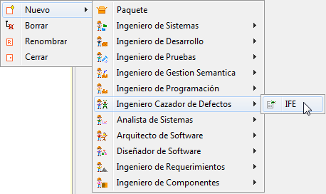
Figura 1. Creación de un entorno IFE
Barra de herramientas del Plugin Diagrama de Interés:
Esta barra ofrece las funcionalidades comúnes para el editor de código.
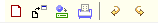
Figura 2. Barra de herramientas del plugin
Nueva Clase: Seleccione el icono Nuevo para crear una clase vacía.

Figura 3. Creación de nueva clase
Escriba un nombre para la nueva clase, dicho nombre será usado también para nombrar el archivo de código fuente. Ej. (Clase_Prueba.java), como se observa en la Figura 4.

Figura 4. Agregando nombre a la nueva clase
Colosoft genera una nueva clase vacía e inicia el editor de código., como se observa en la Figura 5.

Figura 5. Clase de prueba en el editor de código
Importar Archivos de Código: Seleccione el botón Importar.

Figura 6. Editando código
Seguidamente se abrirá una ventada de selección de archivos.
Importe archivos .java que contengan código fuente.

Figura 7. Archivo creado con la clase
Editor: edite o inserte código a modo de texto, el editor de código de Colosoft permite trabajar cómodamente sobre el código resaltando con diferentes colores las palabras claves correspondientes al lenguaje de programación.

Figura 8. Coloreado de sintaxis y agrupación de código
Colosoft también le permite resaltar módulos dentro del código mostrando llaves cuadradas al lado izquierdo del editor.
Depuración de Código : Para iniciar la depuración de código, haga clic sobre el botón Compilar ubicado en la esquina superior derecha del marco de expresión del Plugin IFE.
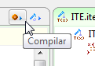
Figura 9. Compilando el proyecto
En el Marco de Extensión bajo la pestaña "Consola de Compilación" puede observar el resultado de la compilación. Corrija todos los errores que aquí se presenten antes de proceder con la depuración.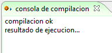
Figura 10. Resultados de la compilación
Asegurese de que su código sea ejecutable para que el depurador pueda iniciarse correctamente.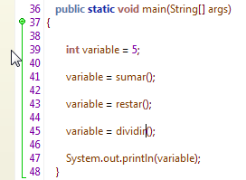
Figura 11. Pruebas unitarias en depuración
Break Point: Establezca puntos específicos sobre los cuales desee interrumpir la ejecución de código para visualizar el valor de las variables presentes. Para agregar un Break Point haga clic al lado izquierdo de una línea de código, se visualizará como un marcador rojo a la izquierda del numero de línea.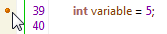
Figura 12. Creando un Break point
Establezca tantos marcadores como necesite también es posible ubicarlos en múltiples lugares del código.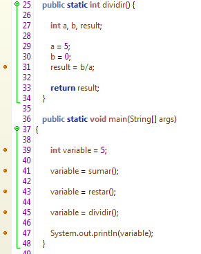
Figura 13. Múltiples break points
Depurar: Con los puntos de Ruptura establecidos haga clic sobre el botón Depurar para iniciar el proceso de depuración.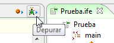
Figura 14. Botón de acceso a la depuración
Control de Flujo : Colosoft permite controlar el flujo de ejecución de tres formas diferentes y teniendo en cuenta los puntos de ruptura. En la parte derecha del marco de Expresión encontrará los botones correspondientes a cada tipo de control.
Paso Dentro: Utilice este control para revisar el estado de las variables haciendo una pausa en cada línea de ejecución. Este control no tiene en cuenta los Puntos de Ruptura.
Paso Sobre: El código es ejecutado sin realizar pausas hasta el primer Punto de Ruptura que se encuentre en el código, a partir de la línea de código. que este punto indique, Colosoft realizará pausas sobre cada línea de código. restante.
Dar Salto : El código es ejecutado sin realizar pausas hasta el primer Punto de Ruptura que se encuentre en el código, haciendosé saltos en el control de Flujo por cada Punto de ruptura.
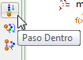 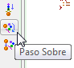 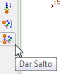
Figura 15. Botones de control para la depuración
Visualización de variables: Dentro del Marco de Extensión, bajo la pestaña Consola De Depuración, Colosoft mostrará el valor de cada variable y estructura utilizada, acorde con el punto de ruptura sobre el cual se sitúa el Flujo de Ejecución.
Figura 16. Visualización de variables en depuración
Guardar: Guarde los cambios realizados en el código editado sobre el archivo fuente de la clase que actualmente está abierto.

Figura 17. Guardar código
Imprimir: Imprima el código fuente desde el editor de código a su impresora, utilizando la opción Imprimir y el diálogo genérico de impresión.

Figura 18. Imprimir
Deshacer - Rehacer: Deshaga cambios realizados en el código mediante la opción Deshacer, y rehaga cambios previamente descartados mediante la opción Rehacer.

Figura 19. Rehacer